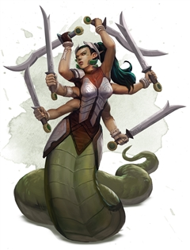

Marilith
Terrible to behold, a marilith has the lower body of a great serpent and the upper torso of a humanoid female with six arms.
Wielding a wicked blade in each of its six hands, a marilith is a devastating foe that few can match in battle. These demons possess keen minds and a finely honed sense of tactics, and they are able to lead and unite other demons in common cause. Mariliths are often encountered as captains at the head of a demonic horde, where they embrace any opportunity to rush headlong into battle.